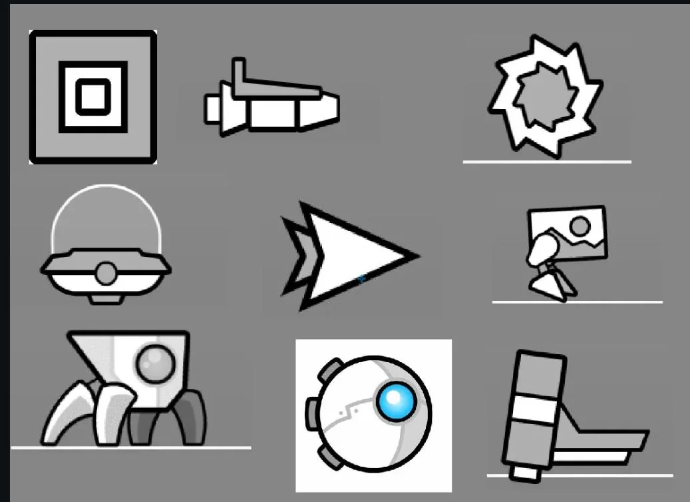
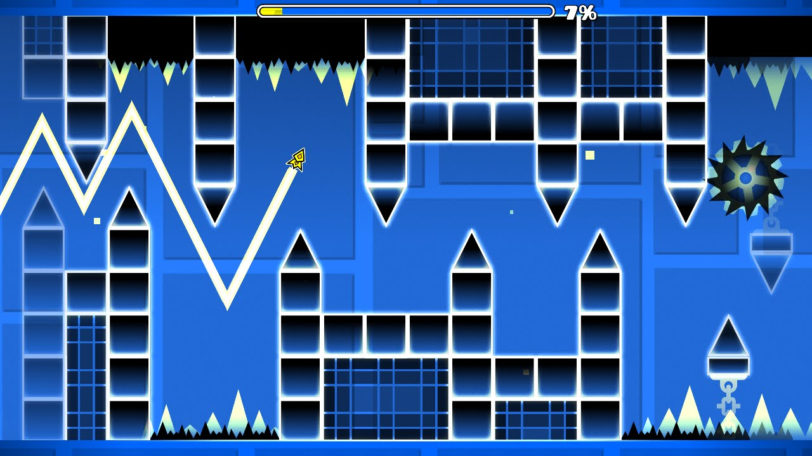
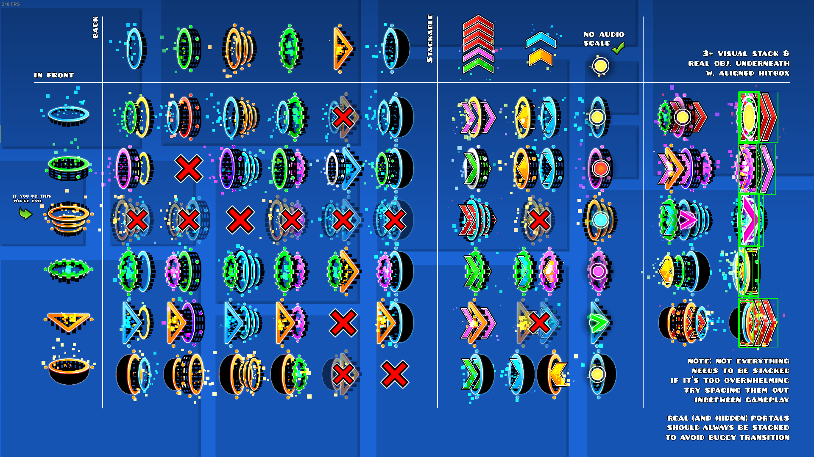
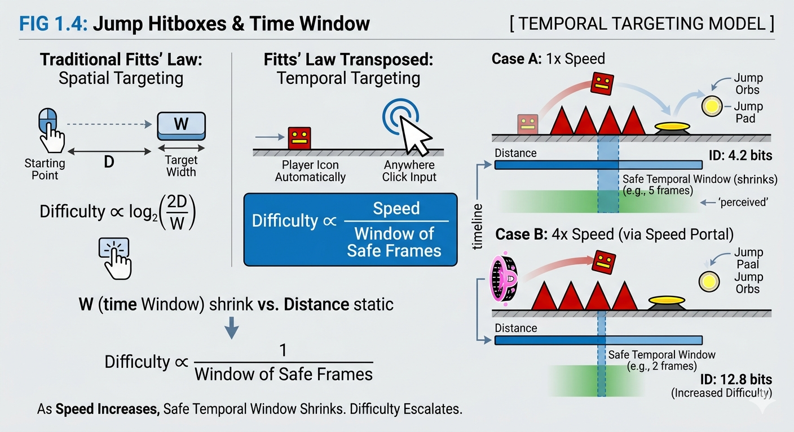
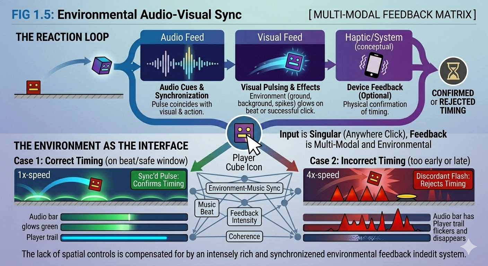

Geometry Dash
-
Genres:
-
Platforms:
-
Editions:
| 0 | |
| 0 critic ratings |
| 0 | |
| 0 user ratings |
| 0 | |
| 0 critic ratings |
Geometry Dash is a rhythm-based action platformer developed and published by Robert Topala (known as RobTop Games). Released in August 2013, the game has evolved from a simple mobile app into a massive, community-driven ecosystem. The core gameplay involves navigating a customized icon through a series of obstacles, primarily relying on a single input: a screen tap, mouse click, or key press to jump or change gravity.
Unlike traditional platformers, Geometry Dash auto-scrolls at set speeds. There is no spatial aiming or complex input sequences—only binary inputs perfectly timed to a pulsing electronic soundtrack. This distills Human-Computer Interaction to its absolute rawest form: visual anticipation and millisecond-perfect motor response. It serves as an incredible case study for flow state induction through minimalist interface design and immediate feedback loops.

The focal point of the screen. The icon automatically moves forward, and the user's only control is manipulating its vertical axis (jumping, flying, reversing gravity). It represents the absolute center of the user's spatial awareness.

Static or moving geometric shapes (spikes, saws, walls) that define the fail-state boundaries. Their contrast against the background is crucial for rapid cognitive processing and determining the exact jump timing window.

Interactive environmental objects. Jump rings (orbs) require a mid-air click, while portals automatically alter the physics engine (speed, gravity, size, or form) the moment the icon passes through them, demanding instant mental recalibration.
Traditional Fitts' Law involves spatial targeting—moving a cursor to a physical box on screen. Because Geometry Dash uses a global screen input (any click anywhere activates the jump), the spatial dimension is removed. Instead, the law must be translated into temporal precision.
In Geometry Dash, the "target width" (W) is actually a window of time. If a gap between spikes requires a 5-frame precision jump, that is the target. As the game speed increases (via speed portals), the physical distance remains the same, but the safe temporal window shrinks drastically, rapidly increasing the Index of Difficulty.

Primary focus. The player icon, lethal obstacles, and interactive orbs. These must be instantly distinguishable to survive.
Secondary focus. Safe platforms and block outlines that provide context for where the player can land.
Tertiary focus. Pulsing colors and decorative elements that sync with the music to induce flow, but possess no collision hitboxes.
An investigation into the neuro-mechanical feedback loops of one-button rhythm platforms, specifically analyzing the Geometry Dash interaction model.
Visual obstacles approach from the right side of the screen, synced with audio cues from the music track.
The brain aligns the visual gap with the rhythm of the song to calculate the exact millisecond to act.
A single binary input (mouse click, spacebar, or screen tap). No complex chords or aiming required.
Immediate result: the icon successfully clears the gap, or crashes resulting in an instant level reset.
Because the game relies on a single input, the feedback it provides must be incredibly rich to compensate. The environment itself becomes the interface. The audio, visual pulsing, and level design all work in concert to confirm or reject the player's timing.

The soundtrack is the most critical feedback layer. The layout of the level is mapped perfectly to the beats, drops, and melodies of the song. A successful sequence of jumps feels and sounds like the player is "playing" the music.
Backgrounds pulse to the beat of the song. Successful orb clicks emit particle bursts. A failure results in a jarring, immediate shatter animation and the cessation of the music, providing instant negative reinforcement.
Because the input is so minimal, players often develop heavy tactile reliance on the "click" sound of their mouse or the tap on their phone screen. This physical sound blends with the game's audio to create a personalized rhythmic feedback loop.
Geometry Dash utilizes a brutally efficient cybernetic loop based on trial and error. The penalty for failure is an immediate respawn at the start of the level. This near-zero downtime between failure and the next attempt minimizes frustration latency, keeping the player trapped in a highly addictive "Action-Perception-Correction" cycle.
The spatial model in Geometry Dash is highly restrictive. The camera is locked to the player icon, meaning the environment moves around the user, rather than the user moving through the environment. This framing technique forces the player's eyes slightly ahead of the icon (to the right side of the screen) to parse incoming data, effectively splitting visual processing between the current icon state (peripheral) and the upcoming obstacle (focal).
Geometry Dash represents the absolute minimization of Extrinsic Load. Because there is no inventory, no map, and no complex controls to learn, 100% of the player's cognitive capacity is poured into the Intrinsic Load of rhythmic timing and pattern recognition.
| Extrinsic Zero-Point | Intrinsic Saturation |
|---|---|
Zero HUD InterferenceAside from an optional, thin progress bar at the top edge of the screen, the entire display is devoted solely to the gameplay area. |
Rote MemorizationIn higher difficulties, the speed exceeds human reaction time. The cognitive load shifts from reacting to recalling memorized motor-patterns. |
Universal InputNo matter the vehicle (cube, ship, ball, UFO), the input method (click/hold) remains identical. The brain never has to search for the right button. |
Sensory Flow StateThe perfect alignment of visual obstacles with audio beats allows players to bypass conscious thought, entering a deep state of automatic mechanical execution. |
The interface is non-existent. The screen is the controller, the music is the prompt, and the gameplay is the pure, unfiltered measurement of human rhythmic precision.
A comprehensive breakdown of the minimalist rhythm platformer paradigm. Evaluating how a system built on a single button press can still face profound UX hurdles when scaled by a massive community.
| System Strengths Positive_Vectors | System Weaknesses Negative_Vectors |
|---|---|
|
01_ACCESSIBILITY
Mechanical AccessibilityBecause it only requires one button, it is immediately playable by anyone. There are no complex control schemes to learn, removing mechanical barriers to entry. |
01_PUNISHING
Zero Margin for ErrorThe game offers no dynamic difficulty adjustment or damage states. A failure at 99% of a level requires starting completely over from 0%, which can lead to extreme psychological frustration. |
|
02_LOOP
Instant Feedback LoopThe death-to-respawn time is practically instantaneous. This immediate reset keeps users engaged and prevents them from disengaging mentally after a failure. |
02_HEALTH
Sensory HazardsHeavy reliance on flashing colors, strobe effects, and screen-shaking makes the game inherently inaccessible to players with photosensitive epilepsy or severe motion sickness. |
|
03_CREATOR
Level Editor IntegrationThe robust in-game editor empowers players to become designers. The seamless transition between playing and creating fosters a self-sustaining ecosystem of infinite content. |
03_NOISE
Community UX DegradationIn modern, user-created "Demon" levels, extreme decorative clutter often completely obscures the actual hitboxes and gameplay paths, turning the game into a test of brute-force memorization rather than sight-reading. |
Geometry Dash proves that HCI does not need to be structurally complex to be infinitely deep. By reducing user input to a single, binary trigger, it shifts the entire burden of interaction from learning controls to mastering timing. However, as the community pushes the limits of the engine, it highlights the breaking point where aesthetic expression severely compromises interface clarity.